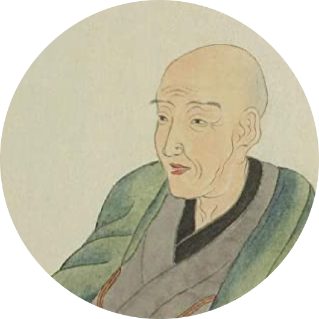
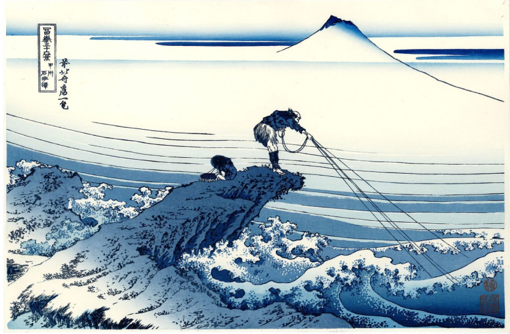
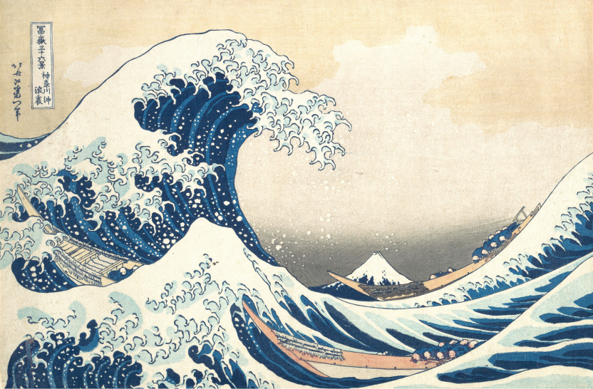

Hokusai Katsushika est un artiste japonais pratiquant la peinture, le dessin et la gravure. Il est également connu comme auteur d’écrits populaires au japon. Hokusai, aussi surnommé le “Vieux fou du dessin” est principalement reconnu pour
son oeuvre “La grande vague de Kanagawa” et sa série d’estampes s’intitulant “36 vues du Mont Fuji”, publiées au début du XIXème siècle.

Couleurs & Contexte
Le bleu de prusse est un pigment bleu foncé né vers les années 1700. Ce pigment a été découvert accidentellement en Allemagne. Un chimiste du nom de Georg Ernst Stahl tentait de créer un rouge carmin et a obtenu ce bleu aux teintes foncées.
Dès le procédé de fabrication connu, le bleu de Prusse est diffusé et exporté partout. Le Japon en importe significativement à partir de 1830 à l'époque de la mode de l'aizuri-e, des estampes gravées sur bois (ukiyo-e) en camaïeu de bleu.
Le bleu de Prusse est la couleur principale des Trente-six vues du mont Fuji, de Hokusai, publiées en 1830.
Les 3 peintures présentées ici font partie de la série s’intitulant “Les 36 vues du Mont Fuji” créées par Katsushika Hokusai, et publiées autour des années 1830. Cette série comprends 46 estampes, chacune de ces oeuvres représente le Mont
Fuji vu de diverses manières, depuis différents lieux, différentes saisons... La technique utilisée pour faire ces oeuvres est donc de l’estampe. L’artiste grave donc sur du bois les reliefs de l’oeuvre et choisit ensuite les couleurs
afin de faire imprimer l’estampe.
Kajikazawa dans la province de Kai, ou “Kôshu Kajikazawa” est la 15ème estampe de la série sur le Mont Fuji, crée par Hokusai.
Il existe plusieurs impressions de cette estampe, avec plusieurs coloris. Celle représenté ici utilise principalement le bleu de prusse. Cette oeuvre est assez contrastée. Au premier plan on observe un pêcheur combattant une mer agitée. La
nature semble ici hostile. Son corps est tendu, son dos courbé témoigne de l’effort qu’il fournit. Au dernier plan, la nature est calme. Le brouillard qui cerne la montagne témoigne du calme qui y règne. Le Mont-Fuji est ici représenté
comme une force de la nature.

La grande vague de Kanagawa
La grande vague de Kanagawa est certainement l’oeuvre la plus célèbre de Hokusai. Elle fait partie de la série des 36 estampes appelées ukiyo-e et ayant pour thème le Mont-Fuji. Cette oeuvre est composée de trois éléments : une mer agitée, 3 bateaux
et le Mont Fuji.
La mer agitée est un symbole de destruction. Elle forme un rouleau qui vise à détruire les oshiokuri-bune, les bateaux de pêcheurs. Ces derniers sont typiques du japon au XIXème siècle. Enfin, le Mont-Fuji est reconnaissable à son sommet enneigé.
Il passe au dernier plan, mais représente le japon et la province de Kanagawa, d’où le nom de l’oeuvre.

Le lac Suwa dans la province de Shinano
Le lac Suwa est une estampe de paysage avec vue sur le Mont Fuji, faisant partie de la série sur cette montagne, crée par Hokusai au XIXème siècle.
Centré au premier plan on observe le sommet d’une colline. Quelques arbres typiques du paysage japonais et une hutte, peut être un sanctuaire. Au second plan est dessiné une forêt, avec un village et des bateaux de pêcheurs. Enfin, dans le
fond reigne le fameux Mont-Fuji, présent sur toutes les estampes de la série. Cette fois ci encore, le sommet est reconnaissable car enneigé. Il veille sur toute la province. Le paysage est calme, presque onirique, contrairement à d’autres
oeuvres où la nature et la mer est apparue comme agitée et en colère..